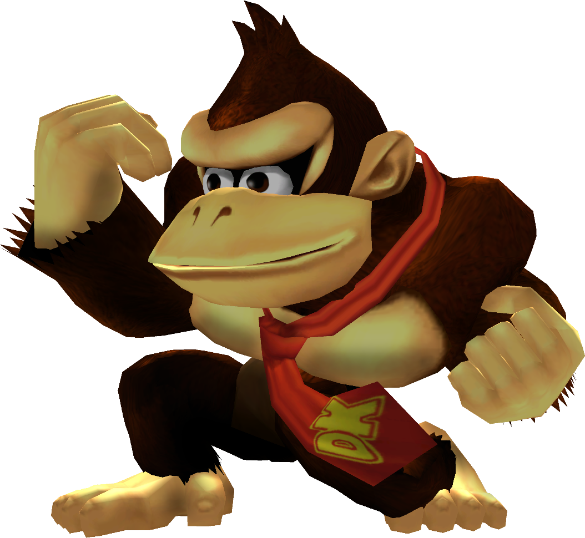

|  | Rank 17th of tier list : DONKEY KONG |
| Weight | |
|---|---|
| 2nd heaviest | |
| Shield stats | |
| Grab range | 16th longest |
| Roll lenght | 10th longest |
| Shield size | 2nd biggest |
| Wavedash lenght | 17th longest |
| Movement stats | |
| Walking speed | 6-10th fastest |
| Turning speed | 25th fastest |
| Running speed | 7-10th fastest |
| Aerial stats | |
| Jump squat | 6 frames (16th fastest) |
| Short hop | 13th highest |
| Aerial speed | 8-9th fastest |
| First jump height | 4th highest |
| Seconde jump height | 20th highest |
| Total jump height | 24-25th highest |
| Average fall speed | 4-5th fastest |
| Fast falling speed | 6th fastest |
| Falling speed | 4-5th fastest |
| Ledge stats | |
| 0-99% ledge roll | 1st longest |
| 100%+ ledge roll | 1st longest |
| 0-99% ledge attack range | 2nd farthest |
| 100%+ ledge attack range | 1stfarthest |
| Intangible ledgedash (Optimal) | 7 frames |
| Notable players | |
| WestBallz, Green Ranger, NJzFinest, Phish-it, Chandy | |
| Smashboard forum | |
| http://smashboards.com/forums/donkey-kong.77/ | |
| Technique guide | |
| https://youtu.be/BjQBZLHk5k | |
Donkey Kong is currently 17th on the tier list in the E tier. Donkey Kong, true to being a heavyweight, is difficult to KO, and this aided by his fast falling speed. Donkey KOng also has powerful attacks, and he has excellent range to boot. Donkey Kong also has powerful attacks, and he has excellent range to boot. Despite his weight and size, Donkey Kong is very agil ; most of his attacks are executed swiftly, he has good air speed, and his jumping proess is surprisingly good. His mobility facilitates combos due to his large frame, and his recovery is among the worst in the game vertically (though it is rather good horizontally). Due to these traites, Donkey Kong is seen as a below-average character.